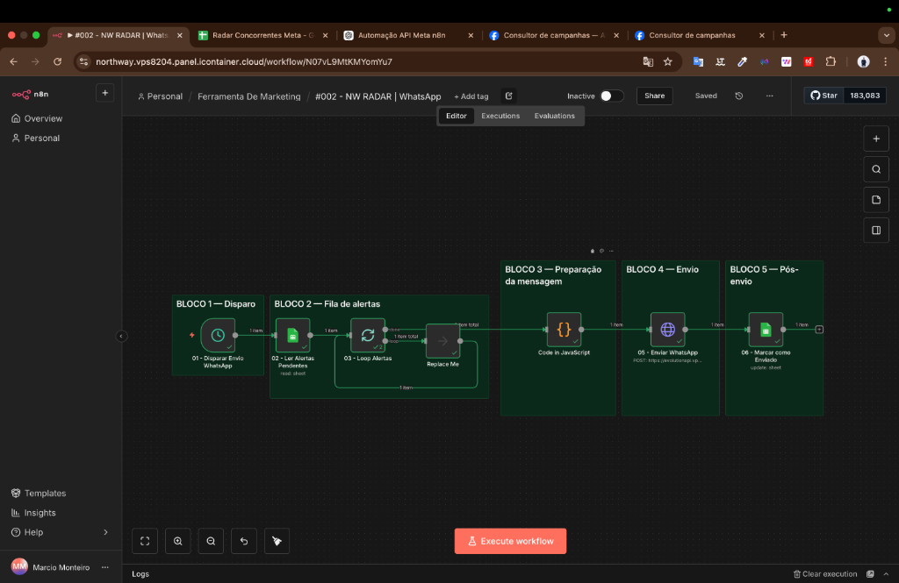
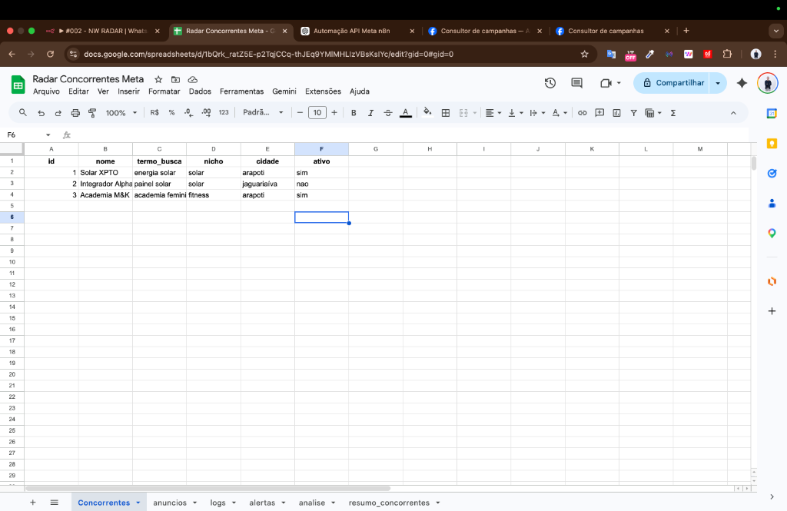

Consultor de Campanhas
Ambiente de Revisão para Análise da Meta
Ferramenta interna de monitoramento, análise e organização de anúncios e páginas do ecossistema Meta.
Ambiente Restrito de Revisão
Importante para o Analista da Meta
Este aplicativo opera atualmente em ambiente operacional restrito. O acesso completo à ferramenta não está disponível publicamente neste momento.
A validação da funcionalidade deve ser feita com base em:
- Vídeo (screencast) enviado na submissão
- Prints e documentação de apoio
- Fluxo operacional demonstrado nesta página
O que este aplicativo faz
O Consultor de Campanhas foi desenvolvido para apoiar operações de marketing digital e mídia paga.
Ele permite:
- Monitorar anúncios ativos disponíveis publicamente
- Analisar criativos e copies
- Acompanhar padrões de comunicação de mercado
- Organizar dados operacionais
- Gerar alertas automáticos para uso interno
- Apoiar decisões estratégicas de marketing
Como o sistema funciona
Fluxo principal
1 Autorização e conexão
O sistema se conecta aos recursos permitidos da Meta utilizando as permissões solicitadas para leitura e análise operacional.
2 Consulta de dados
O aplicativo consulta dados autorizados relacionados a anúncios e páginas.
3 Processamento interno
As informações são tratadas e organizadas internamente para facilitar a leitura operacional e a análise estratégica.
4 Geração de resultado
O sistema gera alertas, resumos e registros estruturados para uso no dia a dia da operação.
Casos de uso demonstrados
O aplicativo é usado para:
- Monitoramento de anúncios públicos
- Leitura e organização de campanhas
- Acompanhamento de padrões criativos
- Apoio à análise competitiva
- Inteligência operacional de mídia
Como validar o app
Para revisar corretamente esta submissão:
- Acesse esta página institucional: Esta página serve como ponto oficial de apoio à revisão do aplicativo.
- Assista ao vídeo enviado: O screencast mostra o fluxo completo de funcionamento da ferramenta.
- Consulte os materiais anexados: As imagens e documentos demonstram a operação da ferramenta e o uso das permissões solicitadas.
Evidências visuais do sistema
1. Estrutura operacional do app
Fluxo de automação construído no n8n para integração com Meta API.

2. Registro e organização dos dados
Estrutura de dados organizada para análise de competitividade e padrões.

3. Resultado prático do monitoramento
Exemplo de alerta gerado pelo sistema e enviado para o canal operacional.
Segurança e conformidade
Este aplicativo:
- utiliza apenas dados permitidos pelas APIs da Meta
- não acessa dados privados sem autorização
- não compartilha dados com terceiros sem base legal
- não executa scraping fora das diretrizes da plataforma
- é utilizado exclusivamente para fins operacionais e analíticos
Limitações atuais
Situação atual do produto:
- o sistema ainda não possui uma interface pública aberta para login geral
- o uso principal acontece em ambiente interno e operacional
- a interface final do produto está em evolução
Observação importante
O Consultor de Campanhas não é utilizado para práticas abusivas ou não autorizadas.
Seu uso é restrito a:
- leitura de dados permitidos
- organização operacional
- análise de mídia
- inteligência estratégica de campanhas
Contato para revisão
Caso o analista precise de informações adicionais:
Marcio Gabriel Holm Monteiro
marciogholmm@gmail.comObrigado pela análise
Agradecemos a revisão desta solicitação e disponibilizamos esta página como apoio à validação do uso das permissões solicitadas.